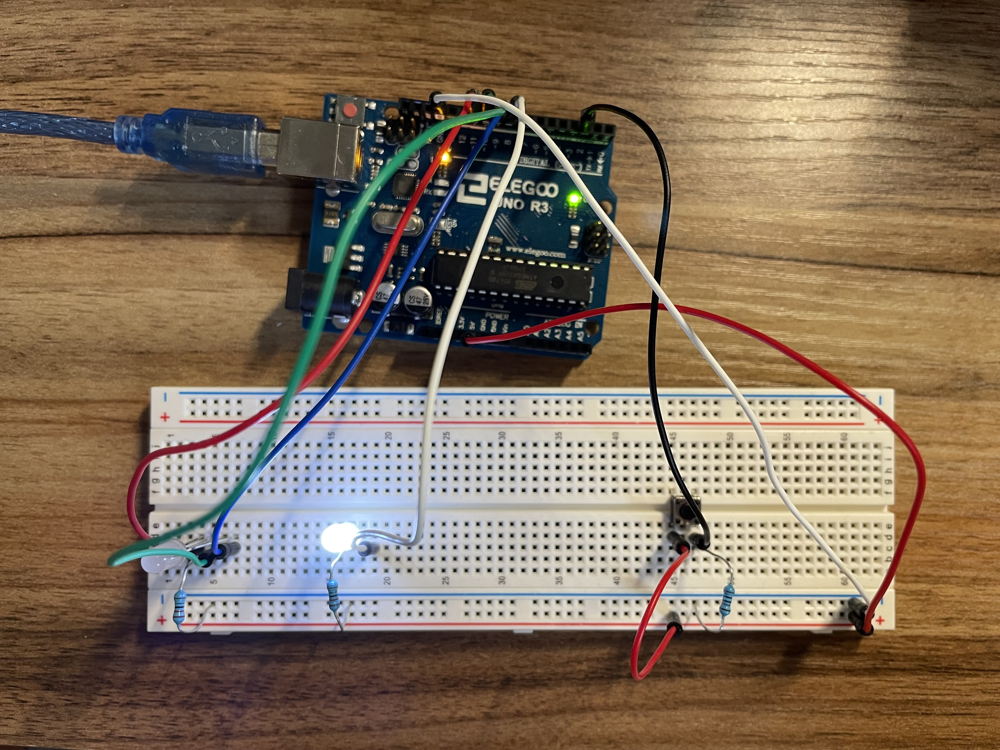
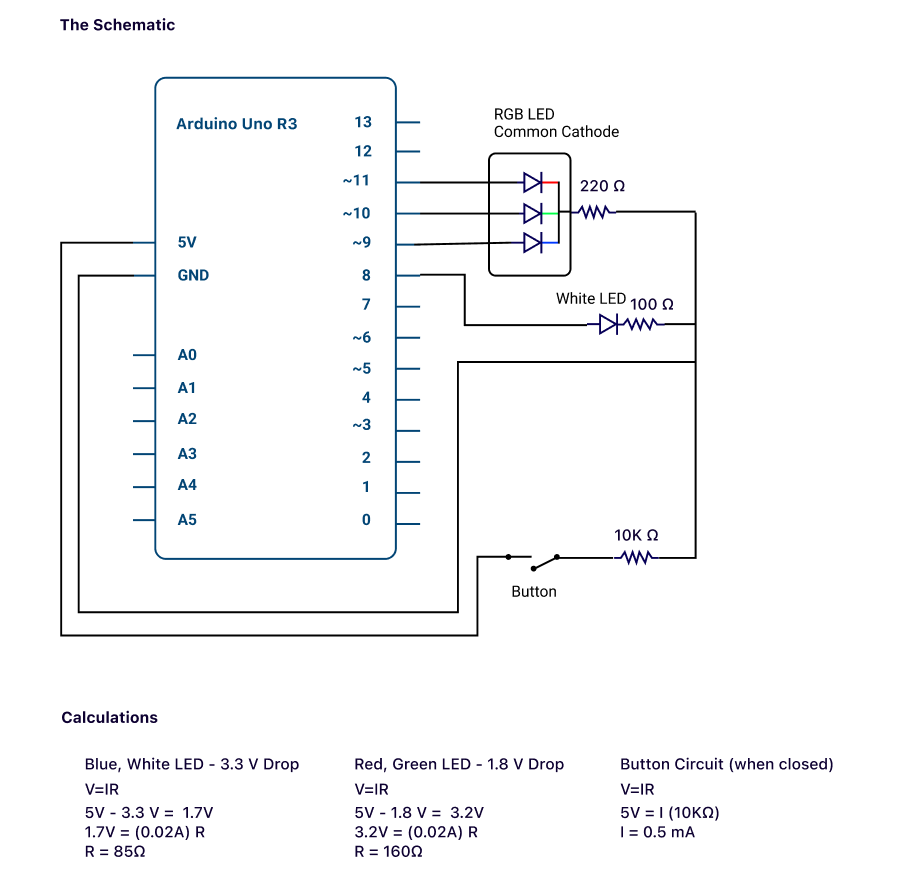

FADEe...

Here is my breadboard with 2 LED lights and a button that controls those LEDs.
Assignment
For this assignment, I connected 2 LED's to a button on my breadboard. On this board, the button controls which LED is turned on. When the button is unclicked, the white LED is on. When the button is clicked, the RGB LED fades in colors.
The Schematic

This is the schematic for my LED lights fading.
I am using Ohm's Law, V=IR, to calculate the resistance needed for 20 mA curent to flow through each of the LEDs.
I have done two calculations for the two voltage drops that are seen in the LED lights,
blue and white see a 3.3V drop, while red, yellow, and green see a 1.8V drop.
Because I do not have resistors with the exact values 85 and 160 ohms, I used 100 ohms for the white LED and 220 ohms for the RGB LED.
For the button that is connected to Pin2, it is reading either a HIGH or a LOW when clicked and defaulted unclicked, respectively.
For this button and circuit, a 10K resistor is standard for the 5V on this Arduino. When the button is unclicked, there will be no electricity flowing through the button betweent the resistance is so strong.
When the switch is closed (button is clicked), there is a 0.5 mA of current through the button.
The Code
const int R = 11; // Red LED in pin 11
const int G = 10; // Green LED in pin 10
const int B = 9; // Blue LED in pin 9
const int W = 8; // Green LED in pin 8
const int buttonPin = 2; // the number of the pushbutton pin
int buttonState = 0; // variable for reading the pushbutton status
void setup() {
pinMode(R, OUTPUT); // initialize the Red LED as output
pinMode(G, OUTPUT); // initialize the Green LED as output
pinMode(B, OUTPUT); // initialize the Blue LED as output
pinMode(W, OUTPUT); // initialize the White LED as output
pinMode(buttonPin, INPUT); // initialize the pushbutton pin as an input
}
void loop() { // the loop routine runs over and over again forever
buttonState = digitalRead(buttonPin); // read the state of the pushbutton value
if (buttonState == HIGH){ // if the button is pressed
digitalWrite(W, LOW); // turn the white LED off
for(int i = 0; i < 256 && buttonState == HIGH;i+=10){ // fade the B in the RGB LED
buttonState = digitalRead(buttonPin); // read the state of the pushbutton value
analogWrite(B, i); // analog write to the B, a value of i
delay(100); // delay 100 ms
}
for(int i = 0; i < 256 && buttonState == HIGH;i+=10){ // fade the G in the RGB LED
buttonState = digitalRead(buttonPin); // read the state of the pushbutton value
analogWrite(G, i); // analog write to the G, a value of i
delay(100); // delay 100 ms
}
for(int i = 0; i < 256 && buttonState == HIGH;i+=10){ // fade the R in the RGB LED
buttonState = digitalRead(buttonPin); // read the state of the pushbutton value
analogWrite(R, i); // analog write to the R, a value of i
delay(100); // delay 100 ms
}
}
digitalWrite(W, HIGH); // turn the white LED on
analogWrite(R, 0); // write Red LED to 0
analogWrite(B, 0); // write Blue LED to 0
analogWrite(G, 0); // write Green LED to 0
}
This is the code I used to develop the behavior I wanted. See the comments in the code for further explanations.
Push for party lights!

Turn on the lights for a focused, white light; turn out the lights for party-like fading lights!